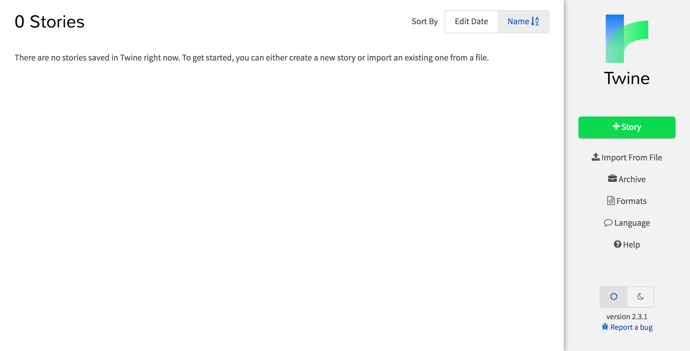
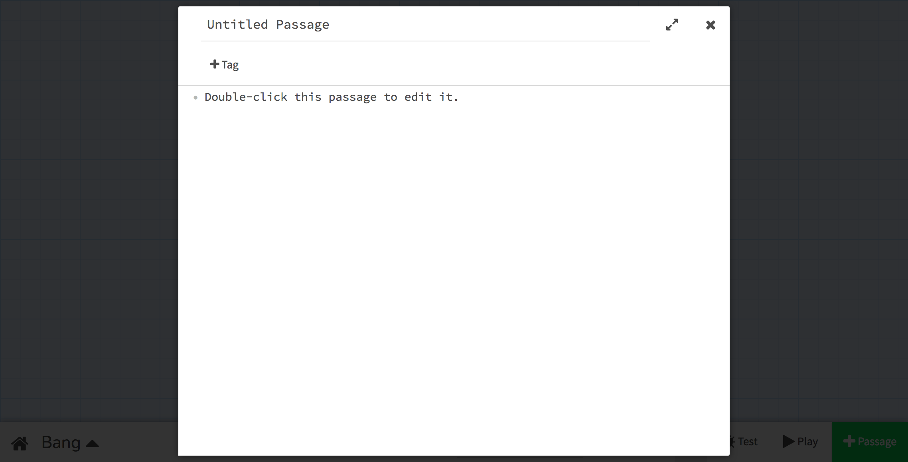
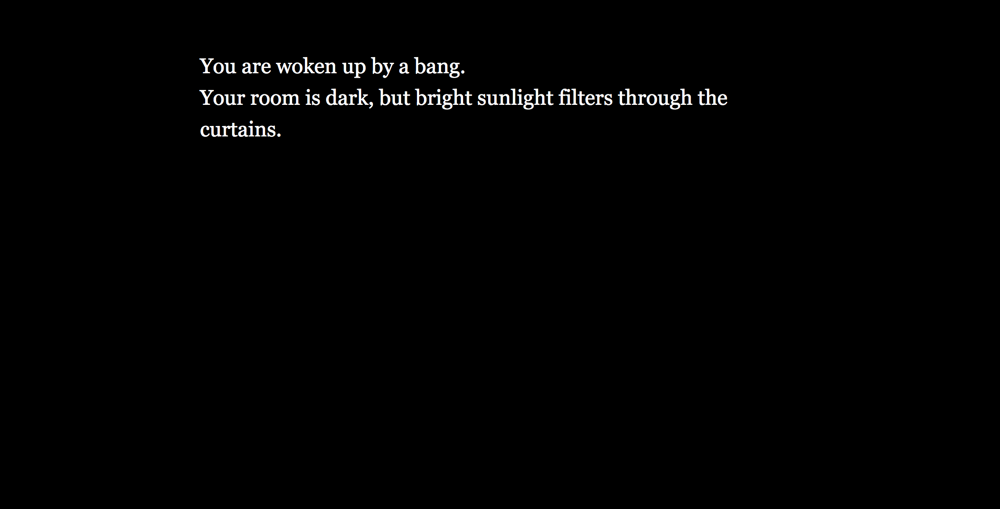
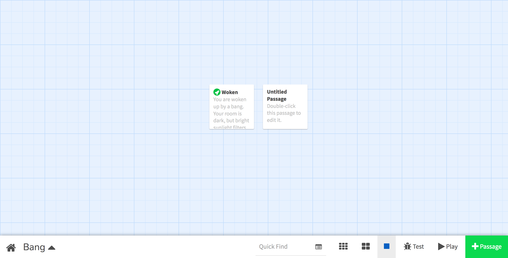
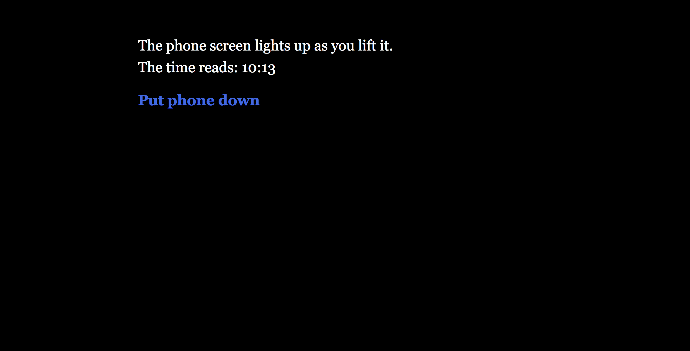
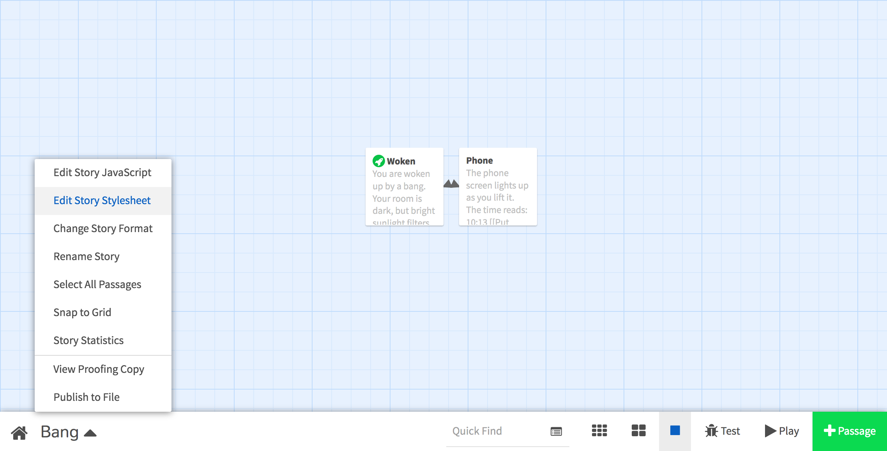
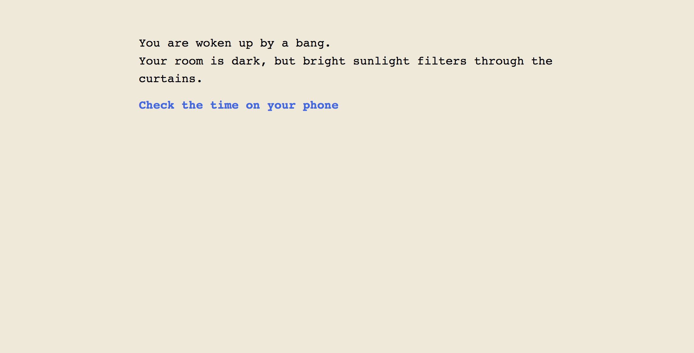

Name your story “Bang”.

In this project, we’ll make an interactive text adventure, using the online editor, Twine.
Many of the earliest computer games were text adventures. Because they only used text, and no graphics, they could run on even the simplest computers.
These days, we can use free editors like Twine to generate point-and-click text adventures that run just like webpages.
Before you write your own text adventure, spend a few minutes playing some existing ones, so you can get a feel for how they work, and what’s possible.
While you’re playing, think about:
A classic text adventure for the BBC Micro, written by Anita Straker in 1984. Note how you have to type words to move around. If you get stuck, try typing help.
A nice, simple starter game, written in Twine. Introduces a few of the tricks of the genre including dead ends, required items, and multiple endings.
Developed by Adrian McEwen, and based around Toxteth Library. Note how he uses photos to make the walk around the library feel like an adventure.
An epic sci-fi game made by 16-19 yr old residents of Wigan, Hull and Blackburn.
Written in the style of a “Choose your own adventure” book, with a Soviet parody twist.
Dystopian sci-fi in a more experimental, less traditional text adventure format.
Now you’ve seen some inspiration, it’s time to make a game of your own.
Visit twinery.org/2.
(If it shows you a “Tell me more” introductory message, you can skip it.)
Create a new story using the green “+ Story” button on the right.
Name your story “Bang”.
Twine will show you the story map of your game.
“Passage” is a word we don’t use very often these days, but it means a “part” of a larger book (sometimes you might have heard people talking about a “passage of text”).
In this case, you can imagine these “passages” like pages, or rooms. Your game is going to lead players through these interlinked pages or rooms, to discover more of the story, and to reach the ending – or endings!
Double-click the Untitled Passage to edit it.
The edit screen lets you give your passage a “title” (which isn’t visible to players, and is how you’ll refer to this passage when you create links to it) and a “body” (which is what will appear on the player’s screen).
For now, let’s create a passage with the following details:
Woken
You are woken up by a bang.
Your room is dark, but bright sunlight filters through the curtains.
Press the cross in the top corner of the edit screen, or the Esc button on your keyboard, to get back to the story map.
Try out your game! Press the “Play” button in the bottom right corner of the map view.
Your game will open in a new window. But there’s not much to do, because it only contains a single passage.
Switch back to your map view, and use the green “+ Passage” button to create a new passage. Then double-click the Untitled Passage to edit it.
Fill in the following details:
Phone
The phone screen lights up as you lift it.
The time reads: 10:13
[[Put phone down->Woken]]
The last line here creates a link back to the passage titled “Woken” (our first passage), and the text displayed in the link will be “Put phone down”.
Get back to the story map, and double-click the “Woken” passage to edit it.
Update the passage content so it looks like this:
Woken
You are woken up by a bang.
Your room is dark, but bright sunlight filters through the curtains.
[[Check the time on your phone->Phone]]
All we’ve done is add a link on the last line, that links to the new “Phone” passage we just created.
Now try your game out. See how you can move back and forth between the two passages.
Your game is only just starting. Try adding a few more passages, to develop the story.
Not sure what should happen next? Here are a few ideas:
If you want to make text stand out in your passages, you can add some cool effects:
''Bold''//Italic//* List item(colour: red)[Coloured text](background: red)[Coloured background](text-style: "blur")[Blurred](text-style: "rumble")[Rumbling](text-style: "shudder")[Shuddering](text-style: "fade-in-out")[Fading in and out]Feedback from other people can help you make your games really great.
Swap with one of the people next to you, and try out their game, while they try out yours.
When you’re both done, give them some feedback:
We’ve only scratched the surface of what’s possible with Twine.
The code you’ve been writing today is a specialised language called Harlowe, and it’s got all the power and flexibility of a full programming language like Python or JavaScript.
You’ve got time now to either improve your existing game, or start a new one.
If you need some ideas, use one of the four random story generators here – Pick a genre, then enter a name and click the "4–6th" button. Pull "Spin" and see what comes up!
Here are a few advanced techniques you might want to try out:
If you’ve done any coding before (for example, in Scratch) you will probably have used variables to store data that updates while the game is being played.
For example, you could use a variable to store:
Let’s add a bit of code that increases a variable by 1 each time the passage is displayed. Here’s how you’d do it in Harlowe:
(set $visits to $visits + 1)
If we want to display the current value of our $visits variable, we can do it like this:
You have visited the passage $visits times.
You can also ask the player to enter a value that then gets saved into the variable. For example, if you wanted to ask the player for their name, and then display it on the screen:
(set: $name to (prompt: "What is your name?", "Example McExampleface"))
Hello, $name!
Once you’ve saved information in a variable, you can do more than just printing it out.
You can set a short phrase to display only if a condition is true, for example:
(if: $visits is 3)[You visited the passage exactly three times]
Or you can use an if-else block to display more than one thing, for example:
(if: $visits < 3)[
Visit [[this room]] three times to discover a secret.
](else:)[
You visited three times. Reward yourself by accessing this [[Secret treasure]].
]
Until you assign a value to a variable, it will be equal to zero (0). We can use this fact to display different text based on whether a variable has been set. For example, with our name prompt from earlier:
(if: $name is not 0)[
Hello, $name!
](else:)[
Hello, stranger!
]
Your game is really just a web page, so you can edit its CSS stylesheet to change how it looks.
You can specify custom CSS styles for your game by selecting “Edit Story Stylesheet” from the story menu in the bottom left corner of the story map screen.
For example, you could add this CSS to make your story look like it’s been made using an old paper typewriter:
tw-story {
font-family: monospace;
background-color: #efe9da;
color: #000;
}

When it comes to fonts, you can use any font that’s installed on your computer. Or you can include a font from Google Fonts, eg:
@import url('https://fonts.googleapis.com/css?family=Anton&display=swap');
tw-story {
font-family: Anton, sans-serif;
}
Your game is only stored on the web browser and computer you’re currently using.
If you want to take your game home with you, you’ll need to download it as a .html file.
To do this, select “Publish to File” from the story menu in the bottom left corner of the story map screen. You can then find the .html file in your Downloads folder.
When you get home, you can import that .html file into Twinery.org, to pick up where you left off.
To do this, visit twinery.org/2 and then select “Import From File” on the right-hand side, below the green “+ Story” button.